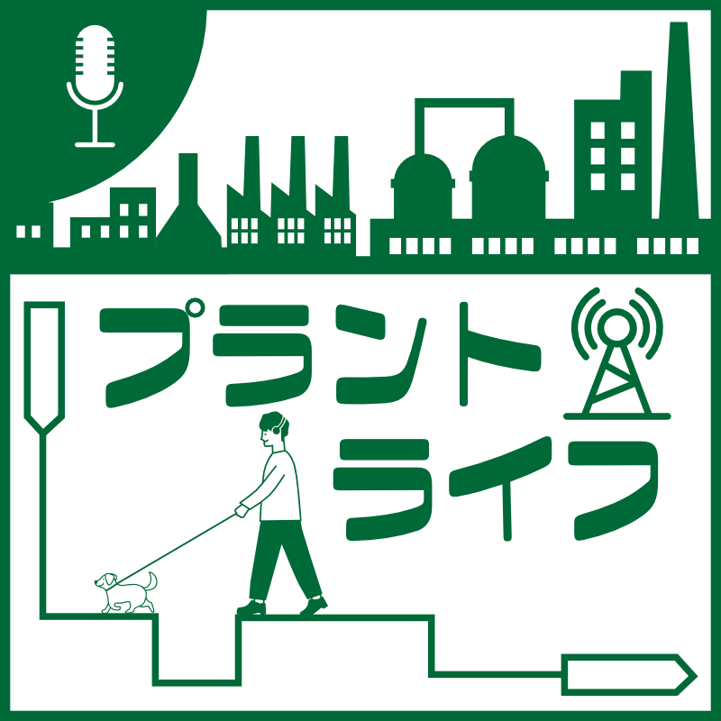
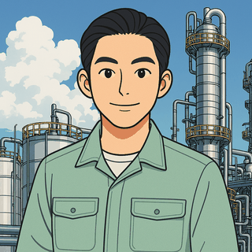

お知らせ！ビデオポッドキャスト化に書籍出版
このプラントライフ、ビデオポッドキャストになりました！そして技術士第一次試験（化学部門）の解説書をKindleで出版したので、作るときにこだわったところと一緒に紹介しています。書籍はこちら！Kindle Unlimitedでも読めます
#134 を聴く・文字起こしを読む化学プラントの技術者"かねまる"がお届けする「化学を軸に視野が広がる」ポッドキャスト。化学物質、資源循環、化学装置の仕組みまで、高度な科学技術も分かりやすく解説します。
毎週水曜・日曜に配信しています。これまでの134回すべてに、文字起こしがあります。

このプラントライフ、ビデオポッドキャストになりました！そして技術士第一次試験（化学部門）の解説書をKindleで出版したので、作るときにこだわったところと一緒に紹介しています。書籍はこちら！Kindle Unlimitedでも読めます
#134 を聴く・文字起こしを読む台所や天気の「なぜ？」を、化学プラントの技術者が化学工学の視点で説明する記事シリーズです。各記事はポッドキャストの放送回とつながっています。
「プラントライフ」は化学を軸に皆さんの視野が広がるポッドキャストです。
化学物質の性質から、プラント設備の仕組み、技術者としての考え方まで、幅広いテーマを音声でお届けしています。

化学プラントの製造技術者として勤務するかねまる。有機化学系の研究で修士号を取得後、化学メーカーで生産技術・製造技術・エンジニアリングを経験。化学工学を中心に、Web記事やポッドキャスト、外部メディア連載などで、技術者の役に立つ情報を発信しています。